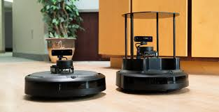
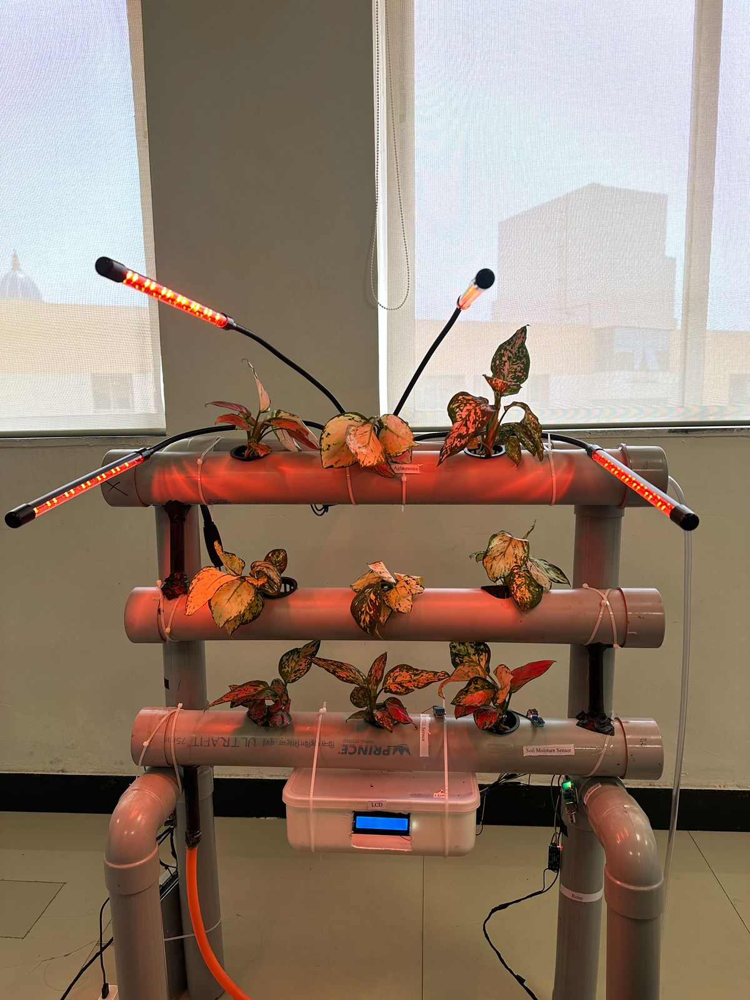
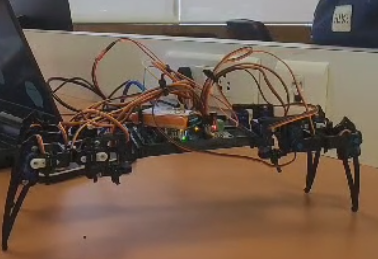

Projects
Projects from my resume, with quick links and visuals

Object detection using Turtlebot 4
Operating through ROS with real time perception and object classification using YOLOv8n.
GitHub:
github.com/yashgolani28
ROS
YOLOv8n
Perception
Robotics

Smart Agriculture System
Automatic hydroponics system with monitoring using ESP32, sensors, ML, and Firebase integration.
GitHub:
github.com/yashgolani28
ESP32
Sensors
IoT
Firebase

Spider Mimic Quadruped
Developed a four legged bio inspired robot with mechanical modeling using Arduino, IoT, and AutoCAD.
GitHub:
github.com/yashgolani28
Arduino
AutoCAD
Mechanical
Robotics